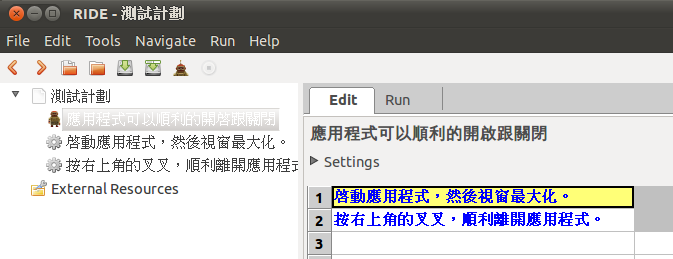
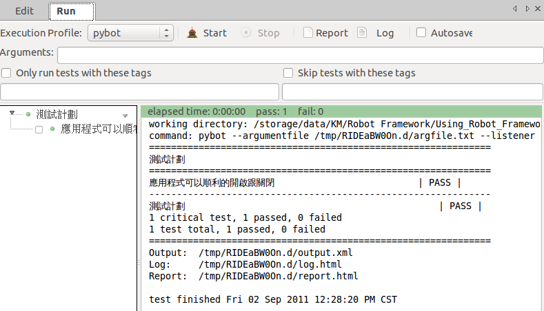

Development
-
WindowsLibrary (有機會起個 google project)
-
BuiltIn 雖有 Wait Until Keyword Succeeds，但缺少反向的 Keyword Never Succeeds In。
-
例如要檢查一段時間內某個條件都不能成立，才能肯定…
-
不過這時候只能看 AssertionError 了，其他 exception 仍該視為 error 才行。
-
Getting Started
Install
-
Robot Framework 本身是用 Python 開發的，首先確認 Python/Jython 的版本至少要是 2.5（不支援 Python 3；Jython 需要 JRE 1.5+）。
-
下載
robotframework-2.6.1.tar.gz後解開，執行python setup.py install或jython setup.py install。（之後還得透過python install.py uninstall反安裝，所以 source code 要留著）$ sudo python setup.py install python setup.py install running install running build running build_py creating build creating build/lib.linux-x86_64-2.6 creating build/lib.linux-x86_64-2.6/robot copying src/robot/pythonpathsetter.py -> build/lib.linux-x86_64-2.6/robot ... byte-compiling /usr/local/lib/python2.6/dist-packages/robot/pythonpathsetter.py to pythonpathsetter.pyc ... running install_scripts copying build/scripts-2.6/pybot -> /usr/local/bin copying build/scripts-2.6/jybot -> /usr/local/bin copying build/scripts-2.6/rebot -> /usr/local/bin changing mode of /usr/local/bin/pybot to 755 changing mode of /usr/local/bin/jybot to 755 changing mode of /usr/local/bin/rebot to 755 running install_egg_info Writing /usr/local/lib/python2.6/dist-packages/robotframework-2.6.1.egg-info Creating Robot Framework runner scripts... Installation directory: /usr/local/lib/python2.6/dist-packages/robot Python executable: /usr/bin/python Jython executable: jython (default value) Pybot script: /usr/local/bin/pybot Jybot script: /usr/local/bin/jybot
Jybot script: /usr/local/bin/jybot  Rebot script: /usr/local/bin/rebot
Rebot script: /usr/local/bin/rebot 
pybot、jybot與rebot被稱做 runner script。只要可以從 PATH找到jython或JYTHON_HOME有指向 Jython 的安裝目錄，透過 Python 安裝 Robot Framework 時，除了pybot，也會一併把jybot這個 runner script 裝起來。rebot是用來產生 reports 用的，跟 Ruby 無關。 -
測試安裝。
$ pybot --version Robot Framework 2.6.1 (Python 2.6.6 on linux2) $ echo $?
251
$ jybot --version
Robot Framework 2.6.1 (Jython 2.5.2 on java1.6.0_20)注意 pybot --version的 return code 並不是 0，不適合某些場合的應用（例如測試跟 CI 的整合）。不過還好，拿pybot執行測試時，如果全部 pass 的話就會傳回 0。不知道為什麼執行 jybot時，CPU 會衝得很高？而且 Quick Start 裡也提到有很多東西jybot不能跑…
雖然 Robot Framework 也提供其他的安裝方式（Windows Installer、Easy Install、One Click Installer 等），不過反倒是 source distribution package 的安裝過程最單純。
easy_install robotframework[==version]沒有給定版次的話，就會安裝最新版（可能是 alpha 或 beta 版）。
$ sudo easy_install robotframework
install_dir /usr/local/lib/python2.6/dist-packages/
Searching for robotframework
Reading http://pypi.python.org/simple/robotframework/
Reading http://robotframework.org
Reading http://code.google.com/p/robotframework/downloads/list
Best match: robotframework 2.6.1
Downloading http://robotframework.googlecode.com/files/robotframework-2.6.1.tar.gz
Processing robotframework-2.6.1.tar.gz
Running robotframework-2.6.1/setup.py -q bdist_egg --dist-dir /tmp/easy_install-H0z1rK/robotframework-2.6.1/egg-dist-tmp-WMHpJs
Creating Robot Framework runner scripts...
Installation directory: /usr/local/lib/python2.6/dist-packages/robotframework-2.6.1-py2.6.egg/robot
Python executable: /usr/bin/python
Jython executable: jython (default value)
Pybot script: /tmp/easy_install-H0z1rK/robotframework-2.6.1/src/bin/pybot
Jybot script: /tmp/easy_install-H0z1rK/robotframework-2.6.1/src/bin/jybot
Rebot script: /tmp/easy_install-H0z1rK/robotframework-2.6.1/src/bin/rebot
warning: no files found matching '*.tsv' under directory 'tools'
no previously-included directories found matching 'tools/*/test'
zip_safe flag not set; analyzing archive contents...
robot.pythonpathsetter: module references __file__
robot.running.arguments: module MAY be using inspect.trace
robot.result.builders: module references __file__
robot.utils.importing: module references __file__
Adding robotframework 2.6.1 to easy-install.pth file
Installing pybot script to /usr/local/bin
Installing jybot script to /usr/local/bin
Installing rebot script to /usr/local/bin
Installed /usr/local/lib/python2.6/dist-packages/robotframework-2.6.1-py2.6.egg
Processing dependencies for robotframework
Finished processing dependencies for robotframeworkC:\> easy_install robotframework
Searching for robotframework
Reading http://pypi.python.org/simple/robotframework/
Reading http://robotframework.org
Reading http://code.google.com/p/robotframework/downloads/list
Best match: robotframework 2.6.1
Downloading http://robotframework.googlecode.com/files/robotframework-2.6.1.tar.gz
Processing robotframework-2.6.1.tar.gz
Running robotframework-2.6.1\setup.py -q bdist_egg --dist-dir c:\docume~1\admini~1\locals~1\temp\easy_install-xd9y9p\robotframework-2.6.1\egg-dist-tmp-ltvre0
Creating Robot Framework runner scripts...
Installation directory: c:\python27\lib\site-packages\robotframework-2.6.1-py2.7.egg\robot
Python executable: C:\Python27\python.exe
Jython executable: jython.bat (default value)
Pybot script: c:\docume~1\admini~1\locals~1\temp\easy_install-xd9y9p\robotframework-2.6.1\src\bin\pybot.bat
Jybot script: c:\docume~1\admini~1\locals~1\temp\easy_install-xd9y9p\robotframework-2.6.1\src\bin\jybot.bat
Rebot script: c:\docume~1\admini~1\locals~1\temp\easy_install-xd9y9p\robotframework-2.6.1\src\bin\rebot.bat
warning: no files found matching '*.tsv' under directory 'tools'
warning: no files found matching 'Makefile' under directory 'doc'
zip_safe flag not set; analyzing archive contents...
robot.pythonpathsetter: module references __file__
robot.result.builders: module references __file__
robot.running.arguments: module MAY be using inspect.trace
robot.utils.importing: module references __file__
Adding robotframework 2.6.1 to easy-install.pth file
Installing jybot.bat script to C:\Python27\Scripts
Installing pybot.bat script to C:\Python27\Scripts
Installing rebot.bat script to C:\Python27\Scripts
Installed c:\python27\lib\site-packages\robotframework-2.6.1-py2.7.egg
Processing dependencies for robotframework
Finished processing dependencies for robotframework
安裝過後，必須手動將 <PythonInstallationDir>\Scripts\ 加到 PATH 環境變數裡，才執行得到 pybot。
|
|
|
雖然程式碼主要還是安裝到 <PythonInstallationDir>\Lib\site-packages\ 底下，但 Python 應用程式習慣將 script 安裝到 <PythonInstallationDir>\Scripts\，例如 PyWin32 也是。 |
|
|
雖然 Easy Install 並沒有提供 uninstall 的功能，但只要手動將 <PythonInstallationDir>\Lib\site-packages\robotframework-x.x.x-pyx.x.egg\（在 Linux 下是 /usr/local/lib/pythonx.x/dist-packages/robotframework-x.x.x-pyx.x.egg/）及其他自動安裝的 pybot 或 jybot 等 script 手動刪除即可。某種程度上這比從 source distribution 安裝來得方便，至少不用一直把 source 留著。 |
Windows Installer 提供有 32-bit (robotframework-<version>.win32.exe) 與 64-bit (robotframework-<version>.win-amd64.exe) 兩個版本。
Creating Robot Framework runner scripts...
Installation directory: C:\Python27\lib\site-packages\robot
Python executable: C:\Python27\python.exe
Jython executable: jython.bat (default value)
Pybot script: C:\Python27\Scripts\pybot.bat
Jybot script: C:\Python27\Scripts\jybot.bat
Rebot script: C:\Python27\Scripts\rebot.bat
Installation was successful. Happy Roboting!
安裝過後，一樣必須手動將 <PythonInstallationDir>\Scripts\ 加到 PATH 環境變數裡，才執行得到 pybot。
|
在開始之前，pybot 或 jybot 選哪邊站？
-
很多人提到整合 Robot Framework 跟 SIKULI 就必須改用
jybot。如果已經用pybot很長一段時間，要轉到jybot會是個大工程，尤其許多 keyword 使用了跟特定平台相依的 modules。其實 Java/Python 只是一個例子，未來還會有 Ruby、Lua、JavaScript 等，而這些都可以被 Java 吃下來。 這會讓我們喪失 CPython 的許多優勢，而且 Jython 真的很慢。 -
軟體測試這東西，終究會遇到要在不同平台上做測試的需求，而跨平台的解決方案則屬 Java 最為成熟，許多程式語言也都搭著 Java 的便車將觸角一次延伸到不同的不台上。寫測試程式這檔事跟開發跨平台的應用程式一樣，要求大部份的程式都是跟平台無關的，非不得已才局部使用平台相依的解法，這樣可以減少開發跟維護的成本。所以應該一開始就採用
jybot，這樣就可以一次吃下 Java、Python、Ruby，也會促使開發人員儘量去找非平台相依的解決方案。
Quick Start
Quick Start 相關的檔案都在 doc/quickstart 下。
受測的應用程式其實是個只提供 CLI 介面的 Python 程式，位在 sub/ 子資料夾裡（這裡的 sut 其實是 System Under Test 的縮寫）。主要提供 3 個功能：新建帳號、登入、修改密碼。（背後用資料庫檔案存放使用者的資料，但在 /tmp 找不到？）
先來手動玩看看：
$ python sut/login.py login nobody P4ssw0rd
Access Denied
$ python sut/login.py create fred P4ssw0rd
SUCCESS
$ python sut/login.py login fred P4ssw0rd
Logged In
$ python sut/login.py create fred short
Creating user failed: Password must be 7-12 characters long
$ python sut/login.py create fred invalid
Creating user failed: Password must be a combination of lowercase and uppercase letters and numbers
$ python sut/login.py change-password fred wrong NewP4ss
Changing password failed: Access Denied
$ python sut/login.py change-password fred P4ssw0rd short
Changing password failed: Password must be 7-12 characters long
$ python sut/login.py change-password fred P4ssw0rd NewP4ss
SUCCESS| 新建帳號。密碼必須 7 ~ 12 個字元，且包含大小寫的英數字。 | |
| 登入 | |
| 修改密碼，必須提供舊密碼。 |
試試看自動化測試 quickstart.html：
$ pybot quickstart.html
==============================================================================
Quickstart
==============================================================================
User can create an account and log in | PASS |
------------------------------------------------------------------------------
User cannot log in with bad password | PASS |
------------------------------------------------------------------------------
User can change password | PASS |
------------------------------------------------------------------------------
Too short password | PASS |
------------------------------------------------------------------------------
Too long password | PASS |
------------------------------------------------------------------------------
Password without lowercase letters | PASS |
------------------------------------------------------------------------------
Password without capital letters | PASS |
------------------------------------------------------------------------------
Password without numbers | PASS |
------------------------------------------------------------------------------
Password with special characters | PASS |
------------------------------------------------------------------------------
User status is stored in database | PASS |
------------------------------------------------------------------------------
Quickstart | PASS |
10 critical tests, 10 passed, 0 failed
10 tests total, 10 passed, 0 failed
==============================================================================
Output: /storage/dev/robotframework-2.6.1/doc/quickstart/output.xml
Log: /storage/dev/robotframework-2.6.1/doc/quickstart/log.html  Report: /storage/dev/robotframework-2.6.1/doc/quickstart/report.html
Report: /storage/dev/robotframework-2.6.1/doc/quickstart/report.html 
pybot 在 Windows 下也可以用 / 來做為路徑分隔字元。
| |
| 這裡的 Quickstart 是從檔名推導出來的 suite name，它會出現在很多地方，包括 report 跟 log。 | |
| XML 格式的測試結果，方便跟其他工具整合。 | |
| 測試結果的細節。 | |
| 測試結果的摘要。 |
|
|
一個 test case file 包含許多 test case，自然就形成了一個 test suite（名稱從檔名推導出來），而且 test suite 可以進一步透過目錄來營造出上下的階層關係。因此 test case file 相對於 suite directory 而言，也可以稱做 suite file。 |
report.htmllog.html|
|
不要被右上角反白的 log/report 搞糊塗了，那只是一個方便取用的連結，跟目前你在檢視 log 或 report 無關。 |
output.xml<?xml version="1.0" encoding="UTF-8"?>
<robot generated="20110728 18:48:47.129" generator="Robot 2.6.1 (Python 2.6.6 on linux2)">
<suite source="/storage/dev/robotframework-2.6.1/doc/quickstart/quickstart.html" name="Quickstart">
<doc></doc>
<metadata></metadata>
<test name="User can create an account and log in" timeout="">
<doc></doc>
<kw type="setup" name="Clear login database" timeout="">
<doc></doc>
<arguments></arguments>
<kw type="kw" name="OperatingSystem.Remove File" timeout="">
<doc>Removes a file with the given path.</doc>
<arguments>
<arg>${DATABASE FILE}</arg>
</arguments>
<msg timestamp="20110728 18:48:47.322" html="yes" level="INFO">File '<a href="file:///tmp/robotframework-quickstart-db.txt">/tmp/robotframework-quickstart-db.txt</a>' does not exist</msg>
<status status="PASS" endtime="20110728 18:48:47.322" starttime="20110728 18:48:47.321"></status>
</kw>
<status status="PASS" endtime="20110728 18:48:47.323" starttime="20110728 18:48:47.320"></status>
</kw>
<kw type="kw" name="Create valid user" timeout="">
...Robot Framework 用表格來寫 test case（tabular syntax；可以是 HTML、TSV、或純文字？）：
看起來像是用英文寫的 maunal test，不像是自動化的測試案例。先來拆解這兩個範例：
+-----------------------------------------+-------------------------------------+-----------------+------------+
| Test Case | Action | Argument | Argument |
|--------------------------------------------------------------------------------------------------------------|
| User can create an account and log in | Create Valid User | fred | P4ssw0rd |
|--------------------------------------------------------------------------------------------------------------|
| | Attempt to Login with Credentials | fred | P4ssw0rd |
|--------------------------------------------------------------------------------------------------------------|
| | Status Should Be | Logged In | |
|--------------------------------------------------------------------------------------------------------------|
| | | | |
|--------------------------------------------------------------------------------------------------------------|
| User cannot log in with bad password | Create Valid User | betty | P4ssw0rd |
|--------------------------------------------------------------------------------------------------------------|
| | Attempt to Login with Credentials | betty | wrong |
|--------------------------------------------------------------------------------------------------------------|
| | Status Should Be | Access Denied | |
+-----------------------------------------+-------------------------------------+-----------------+------------+| 第一個欄位是 Test Case 或 Test Cases 的 HTML 表格，都會被視為內含 test case。 | |
| 第一欄位是 test case 的抬頭。 | |
| 第二欄是 keyword。 | |
| 後面的欄位都 keyword 的 argument。 |
|
|
這真是太美妙了！
有沒有發現什麼特別的地方？說明文件可以直接拿來測試！這也就是為什麼官方文件一再提到 “executable demo” 的關係。 由於上述種種的特性，在實務上，我們可以將讓 test plan/specification/info 跟 test case 共同維護在一份文件裡（而且是可被執行的），這跟 Python 的 doctest 有異曲同工之妙，也跟 Python Docstring 或 Javadoc 強調 code 跟 documentation 的做法有相同的考量－避免產生兩者的不一致。 再者，同樣是 keyword-driven，但 Robot Framework 支持（也鼓勵）用 natural language 來寫 action，讓我們可以在產品還沒開發之前，就可以開始寫 high-level 的 test case，直接對應 requirements，方便跟 non-technical customer 及其他 stakeholder 溝通。更棒的是，雖然一開始不能執行，但漸漸展開細節後就可以執行了。 講到 natural language，當然中文也是支援的：


|
當然 setting table 也可以用來設定 setup/teardown 的邏輯：（Suite 也支援相同的機制，但要改用 Suite Setup 與 Suite Teardown）
+-----------------+------------------------+
| Setting | Value |
|------------------------------------------|
| Test Setup | Clear Login Database |
|------------------------------------------|
| Test Teardown | |
+-----------------+------------------------+Robot Framework 最強大的地方，就是可以直接拿現有的 keyword（不管是 built-in、library 或 user keyword），重新包裝出新的 keyword 來：
+------------------------------------------------+-------------------------------------+-------------------+---------------+
| Keyword | Action | Argument | Argument |
...
|--------------------------------------------------------------------------------------------------------------------------|
| Login | [Arguments] | ${username} | ${password} |
|--------------------------------------------------------------------------------------------------------------------------|
| | Attempt to login with credentials | ${username} | ${password} |
|--------------------------------------------------------------------------------------------------------------------------|
| | Status should be | Logged In | |
|--------------------------------------------------------------------------------------------------------------------------|
| | | | |
|--------------------------------------------------------------------------------------------------------------------------|
| # Used by BDD test cases (this is a comment) | | | |
|--------------------------------------------------------------------------------------------------------------------------|
| Given a user has a valid account | Create valid user | ${USERNAME} | ${PASSWORD} |
|--------------------------------------------------------------------------------------------------------------------------|
| When she changes her password | Change password | ${USERNAME} | ${PASSWORD} |
|--------------------------------------------------------------------------------------------------------------------------|
| | ... | ${NEW PASSWORD} | |
|--------------------------------------------------------------------------------------------------------------------------|
| | Status should be | SUCCESS | |
...
+------------------------------------------------+-------------------------------------+-------------------+---------------+
User keywrod 也可以宣告參數，依序對應到 username 與 password。
| |
這裡才開始把參數代進來做處理。把 Attempt to login with credentials 跟 Status should be 重新組合成 Login。
| |
# 開頭的是註解。
| |
... 表示是上一行的延伸。
| |
${...} 框起來的部份是變數名稱，大小寫有別。
|
|
|
User keyword 除了可以把 reusable steps for common action sequences 集合起來之外，更重要的是，利用 test case → higher-level keyword → lower-level keyword 的分層關係，可以針對不同的讀者，適度地把細節藏起來。 |
變數可以從 variable table 定義：
+--------------------+--------------------------------------------------+
| Variable | Value |
|-----------------------------------------------------------------------|
| ${USERNAME} | janedoe |
|-----------------------------------------------------------------------|
| ${PASSWORD} | J4n3D0e |
...
|-----------------------------------------------------------------------|
| | |
|-----------------------------------------------------------------------|
| ${DATABASE FILE} | ${TEMPDIR}${/}robotframework-quickstart-db.txt |
...
+--------------------+--------------------------------------------------+
都已經是 variable table 了，還要加上 ${...} 是有點累贅。
| |
內容可以引用其他變數（類似樣板的用法）。這裡的 ${TEMPDIR} 跟 ${/} 其實是 built-in variable，跟 user-defined variable 不同。
|
嚴格來說，variable table 的目的應該不是要宣告變數（事實上，變數不需要事先宣告），而是讓讀者清楚有哪些變數可以調整，或給定預設值（可以多一欄做說明？）。變數的值也可以從 command line 傳進來（通常是因應測試環境不同所做的調整），會覆寫定義在 variable table 的值。例如：
pybot --variable USERNAME:johndoe --variable PASSWORD:J0hnD0e quickstart.html變數除了可以做為 keyword 的 argument 之外，也可以用來接收 keyword 的回傳值：
+---------------------------+------------------+---------------+---------------------------------------+-------------+
| Keyword | Action | Argument | Argument | Argument |
|--------------------------------------------------------------------------------------------------------------------|
| Database Should Contain | [Arguments] | ${username} | ${password} | ${status} |
|--------------------------------------------------------------------------------------------------------------------|
| | ${database} = | Get File | ${DATABASE FILE} | |
|--------------------------------------------------------------------------------------------------------------------|
| | Should Contain | ${database} | ${username}\t${password}\t${status} | |
+---------------------------+------------------+---------------+---------------------------------------+-------------+| 把 keyword 往右平移一格，在變數後面加個等號，就可以接收 keyword 的回傳值。 |
最後要來看 test library 的實作：
testlibs/LoginLibrary.pyimport os
import sys
import subprocess
class LoginLibrary:
def __init__(self):
self._sut_path = os.path.join(os.path.dirname(__file__),
'..', 'sut', 'login.py')
self._status = ''
def create_user(self, username, password):
self._run_command('create', username, password)
def change_password(self, username, old_pwd, new_pwd):
self._run_command('change-password', username, old_pwd, new_pwd)
def attempt_to_login_with_credentials(self, username, password):
self._run_command('login', username, password)
def status_should_be(self, expected_status):
if expected_status != self._status:
raise AssertionError("Expected status to be '%s' but was '%s'"
% (expected_status, self._status))
def _run_command(self, command, *args):
if not sys.executable:
raise RuntimeError("Could not find Jython installation")
command = [sys.executable, self._sut_path, command] + list(args)
process = subprocess.Popen(command, stdout=subprocess.PIPE,
stderr=subprocess.STDOUT)
self._status = process.communicate()[0].strip()| 這裡採用的是 static API，所以不需要引入或實作 Robot Framework 特有的東西。 | |
| 以相對於 test case file 的路徑或檔名引入 test library 時，class name 必須跟 module name 一樣。 | |
| 可以維護自己的狀態，跨越多個 keyword，但可以跨多個 test case 嗎？ | |
Keyword 是以 class method 來表現（也可以用單純是 module 裡的 function）。Test case file 裡 Attempt to Login with Credentials 的用法，就是對應到這裡的 attempt_to_login_with_credentials（全部轉成小寫，空白用底線取代，沒有單複數的考量）。
| |
不符合預期時丟出 AssertionError，遇到錯誤時則丟出 RuntimeError。
|
|
|
用 AsciiDoc 也可以寫 test case!! (a2x -f xhtml)，但之後還能用 RIDE 編輯嗎？官方是用 reStructuredText 來寫。 |
Basics
Robot Framework 具有高度模組化的架構。執行期 Robot Framework 會讀入 test data，透過 test library 執行 test case，然後產出 log 跟 report。

Layer 間是相互獨立的，只要遵循事先定義好的介面即可：
-
Test data 必須用 tabular syntax 來表示。但底層的檔案格式則可以有很多選擇：HTML、tab-separated values (TSV)、reStructuredText (reST) 或純文字。
-
Test library 必須符合 test library API 的要求。
Robot Framework 是透過 test library 間接跟 application interface 互動（中間可能再透過其他 test tools 當做 driver，例如 Selenium、AutoIt 或 SIKULI 等），所以 core framework 本身相當的輕巧，對 SUT 一無所。這也就是為什麼 Robot Framework 可以用來測試各種介面互異的應用程式（包括 GUI、Web、CLI、Telnet、SSH 等），因此重心將會落在眾多的 test library 跟 supporting tool。
以副檔名來識別來識別多種支援的檔案格式：（不分大小寫）
-
HTML -
.htm、.html或.xhtml。 -
tab-separated values (TSV) -
.tsv。 -
純文字 -
.txt。 -
reStructuredText (reST) -
.rst或.rest。
|
|
其中 .txt 很適合拿來做為說明之用。 |
Test Data File
Robot Framework 只關心 test data file 裡的 4 種 test data table，其餘的部份可以自由發揮。這 4 種表格有不同的用途，依據第一個 cell 的內容（first cell of the header row；官方稱它為 table name）來識別，其餘的 column header 可以自由發揮：
-
Setting table - 定義 test suite/case 的 metadata，或引入 test library、resource file 及 variable file。用 Setting、Settings 或 Metadata 來識別。
-
Variable table - 定義 variable。用 Variable 或 Variables 來識別。
-
Test case table - 定義 test case。用 Test Case 或 Test Cases 來識別。
-
Keyword table - 定義 user keyword。用 Keyword、Keywords、User Keyword 或 User Keywords 來識別。
| *Variable* | *Value* |
| @{items} | item1 | item2
| *Test Case* | *Action* | *Argument* |
| My Test | @{items}= | Create List | item1 | item2
| | Log | @{items}[0], @{items}[1] | WARN| Pipe 不一定要對齊，每一行的數量也不一定要一樣。 |
Setup and Teardown
假設 test data 的目錄結構如下：
suite_dir/
|-- __init__.txt
`-- sub_suite_dir
|-- __init__.txt
`-- testfile.txtTest case file 裡可以用
先單純從 test case file (testfile.txt) 來看：
| *Setting* | *Value* | *Argument* | *Argument* |
| Suite Setup | Log | Test Case File > Suite Setup | WARN |
| Test Setup | Log | Test Case File > Default Test Setup | WARN |
| *Test Case* | *Action* | *Argument* | *Argument* | *Argument* |
| Test Case 1 | Log | Test Case 1-1 | WARN |
| | [Setup] | Log | Test Case File > Test Case 1 > Setup | WARN
| Test Case 2 | Log | Test Case 1-2 | WARN |
| | [Teardown] | Log | Test Case File > Test Case 1 > Teardown | WARN
從 setting table 可以用 Suite Setup 與 Suite Teardown 分別設定 test suite 的 setup 與 teardown。
| |
Setting table 裡的 Test Setup 與 Test Teardown 設定同一個 test case file 裡所有 test case 預設的 test setup 與 test teardown。
|
觀察執行單一個 test case file 的結果：
$ pybot testfile.txt
==============================================================================
Testfile
==============================================================================
[ WARN ] Test Case File > Suite Setup
Test Case 1 [ WARN ] Test Case File > Test Case 1 > Setup
[ WARN ] Test Case 1-1
| PASS |
------------------------------------------------------------------------------
Test Case 2 [ WARN ] Test Case File > Default Test Setup
[ WARN ] Test Case 1-2
[ WARN ] Test Case File > Test Case 1 > Teardown
| PASS |
------------------------------------------------------------------------------
Testfile | PASS |
2 critical tests, 2 passed, 0 failed
2 tests total, 2 passed, 0 failed
==============================================================================ATDD and BDD
-
Test cases can also be created using only high-level keywords that take no arguments.
-
This style allows using totally free text which is suitable for communication even with non-technical customers or other stakeholders.
-
-
Robot Framework does not enforce any particular style for writing test cases, and it is possible to use for example given-when-then format popularized by behavior-driven development (BDD)
-
This kind of use-case or user-story-like test cases are ideally suited for acceptance test-driven development (ATDD). In ATDD acceptance tests are written before implementing actual product features and they act also as requirements.
Data-Driven
-
Quite often several test cases are otherwise similar but they have slightly different input or output data. In these situations data-driven test cases allow varying the test data without duplicating the workflow.（當然 flow 要有稍微的變化也是可以的）
-
Because only the first cell of the header row is processed, it is possible to have meaningful column headers describing the data.
…
建立自己的 Test Library
由於 Robot Framework 本身是用 Python 開發，所以 library keyword 一定可以用 Python 來實作，沒用到 Jython 不支援的語法或 module 的話，也可以透過 jybot 來執行。當然，採用 jybot 做為 runner script 時，library keyword 也可以用 Java 來實作。
除了 Python 與 Java 之外，把 natively supported language 視為一個 wrapper，往下延伸還有很多的可能性：（雖然說通常會引發另一個 process，執行成本比較高，狀態也不容易維護…）
-
透過 ctypes module 可以從 Python 叫用 C code。
-
透過 Remote Library API，可以用 XML-RPC 跟另一個在本機或遠端用其他程式語言實作的 process 溝通。（當然 SUT 要在那台機器上才有意義）
-
呼叫外部的 utility 或 script 等。
|
|
Robot Framework 貼心地提供了一個快速上手 Python 的教學文件，讓開發人員可以快速上手 library keywrod 的開發。 |
Robot Framework 支援 3 種 test library API，分別是 Static API、Dynamic API 跟 Hybrid API。其間除了 core framework 如何得知某個 module 或 class 實作了哪些 keyword，又這些 keyword 要怎麼呼叫的不同之外，其餘回報測試結果、logging 及回傳變數值的做法都是一樣的；下面的說明均以最為簡單直觀的 Static API 為例。
用 Python 實作 library keyword 時，test library 可以用 module 或 class 來表現，而 library keyword 則直接對應到 module function 或 class method，但不含那些名稱以底線開頭的 function 或 method。
Keyword name 跟 function/method name 在比對時是不分大小寫的，並直接忽略底線字元。例如 open_a_browser() 可以滿足下面這幾種 keyword 的用法：
-
open a browser -
Open A__Browser -
_open_a_browser_
|
|
事實上只有 user keyword 的名稱可以用 natural language 來表現，所以 |
反過來說，有一個 keyword 的用法 Open A__Browser，則下面這幾種 function/method name 都可以滿足：
-
open_a_browser() -
openABrowser() -
open__a_B_R_O_W_S_E_R_()
先學會怎麼用現成的 Python code
|
|
很多時候，現有的 module 可以（但並不適合）直接拿來當做 test library 使用，例如：
用 user keyword 或另一個 module 再包裝過一層，上述這些問題都可以得到緩解，當然最好是不用動到原有的 Python 程式碼。 |
會發現現有的 Python code 很少能夠直接拿來做為 keyword 使用，因此衍生如何自訂 test library 的問題…
動手做自己的 test library
|
|
並且將 .py 擺在 suite file 相同的目錄下（實務上則建議擺在 lib/ 子目錄下），避免讓 library search path 的設定模糊了焦點。 |
foobar.py
class Foo:
def __init__(self): pass
def bar(self, msg): print '*WARN* %s' % msg
def foo(): return Foo()-
-
雖然 Dynamic 看起來就是 XDAF 的出路，但一個 class 一個 keyword 的做法還是很麻煩。或許可以將 get_keyword_names 跟 run_keyword 實作在 module？
-
帶完如何自己寫 keyword 之後，就會知道為什麼現成的 Python code 可以直接被當成是 keyword，但也並非都可以直接轉… scope…
-
resource file 通常命名為
xxx_resource.txt？
.
|-- res
| |-- lib
| | |-- libkws.py
| | |-- my
| | | |-- __init__.py
| | | `-- lib.py
| | `-- your
| | |-- __init__.py
| | `-- lib.py
| `-- resource.txt
`-- test
`-- suite.txt
$ pybot test/suite.txt
==============================================================================
Suite
==============================================================================
Test case
[ WARN ] Hello, Robot Framework (your.lib)
[ WARN ] Hello, World! (your.lib)
| PASS |
------------------------------------------------------------------------------
Suite | PASS |
...test/suite.txt*** Settings ***
Resource ../res/resource.txt
*** Test Cases ***
Test case
Say Hello Robot Framework
Hello World| 雖然只引入 resource file，但 resource file 裡引入的 library keyword 也可以用。 |
|
|
Resource file 可以用來定義 high-level 的 user keyword；但如果是想將 library keyword 的名稱改得更符合 natural language，透過 resource file 來做這件事並不恰當，尤其是使用者透過 RIDE 來找尋可用的 keyword 時，會不知道要選 library keyword 還是 user keyword… |
res/resource.txt*** Settings ***
Library lib/libkws.py
*** Keywords ***
Hello World
Say Hello World!res/lib/libkws.pyimport my.lib
def say_hello(who):
my.lib.greet(who)
就像把 libkws.py 所在的目錄（res/lib）加到 module search path 一樣，不用費心組態 PYTHONPATH。
|
res/lib/my/lib.pyimport your.lib
def greet(who):
your.lib.greet(who)res/lib/your/lib.pydef greet(who):
print '*WARN* Hello, %s (%s)' % (who, __name__)在動手做自己的 test library 之前，先來觀察一下別人怎麼寫。或許是因為用 module 來實作 test library 時不能控制 scope，所以現有的 standard/external test library 清一色都是用 class 來實作。很巧的是，Selenium Library 與 AutoIt Library 都是把 class 寫在 package 的 __init__.py 裡：
SeleniumLibrary/__init__.pyfrom browser import Browser
from page import Page
from button import Button
...
class SeleniumLibrary(Browser, Page, Button, Click, JavaScript, Mouse, Select,
Element, Screenshot, Table, TextField, Flex):
"""SeleniumLibrary is a web testing library for Robot Test Automation Framework.
...
ROBOT_LIBRARY_SCOPE = 'GLOBAL'
ROBOT_LIBRARY_VERSION = __version__
...AutoItLibrary/__init__.pyclass AutoItLibrary(Logger.Logger, Counter.Counter):
...
ROBOT_LIBRARY_SCOPE = "GLOBAL"|
|
Test Library Scope
所謂 test library scope 指的是什麼時候要重新建立一個 test library 的 instance 而言，也就是 test library 內部的 internal state 什麼時候要清掉重來。 Test library scope 區分為 global、test suite 跟 test case 三種。用 class 來實作 test library 時，可以用一個叫做
用 class 來實作 test library 時，預設是採用 test case scope。要怎麼決定一個適當的 scope 呢？這裡有幾個簡單的原則：
library keyword 命名要注意一些地方：
|
除了基本的概念之外，剩下的都是 Keyword
先學會用現成的 keyword，才知道怎麼設計自己的 keyword。從中可以發現一些慣例，才不會讓自己寫的 keyword 跟其他現成的 keyword 格格不入。
Robot Framework’s time format
Variables
除了可以存放單一值的 scalar variable 之外，還有另一種可以存放多個值的 list variable。例如：
| *Variable* | *Value*
| @{items}= | item1 | item2
| *Test Case* | *Action* | *Argument* | *Argument*
| Test | Log | @{items}[0], @{items}[1] | WARN
每一個 cell 都代表一個 element。注意 list variable 用 @{variable} 來表示，跟 scalar variable 的 ${variable} 不同。
| |
用 @{variable}[n] 可以取出特定一個 element，其中 n 是 0-based 的 index。
|
| *Test Case* | *Action* | *Argument* | *Argument*
| Test | @{items}= | Create List | item1 | item2
| | ${items}= | Create List | item1 | item2
| | Log | @{items}[0], @{items}[1] | WARN
BuiltIn.Create List 可以將後面多個 argument 組成單一個 list。但它的結果可以同時指定給 ${scalar} 或 @{list}。
|
用 list variable 來說明 scalar/list variable 的差異再適合不過：
| *Test Case* | *Action* | *Argument* | *Argument*
| Test | @{list_acc}= | Create List | john | secret
| | Log In | @{list_acc}
| | Log In | @{list_acc}[0] | @{list_acc}[1]
| | ${scalar_acc}= | Create List | john | secret
| | Log In | ${scalar_acc}[0] | ${scalar_acc}[1]
| | Log In | ${scalar_acc}
| *Keyword* |
| Log In | [Arguments] | ${username} | ${password} |
| | Log | account = ${username} / ${password} | WARN
上面這兩種用法都會輸出 account = john / secret。
| |
雖然執行期不會有錯誤，但卻輸出 account = [u'john', u'secret'][0] / [u'john', u'secret'][1]。
| |
List variable 不會自動展開，所以執行期會出現 Keyword 'Log In' expected 2 arguments, got 1. 的錯誤。
|
Keyword 只要傳回 list 或 tuple，就可以從 Robot Framework 以 list variable 接下來。
def return_two_values():
return 'first value', 'second value'
def return_multiple_values():
return ['a', 'list', 'of', 'strings']先學會用 built-in variable。${OUTPUT DIR} 注意中間沒有底線。
從 command line 可以直接給變數值：
-
--variable name:value -
--variable name:value --escape space:_
例如 --variable RESOURCE_DIR:... --escape space:_ 會產生 RESOURCE DIR 的 variable。
-
Get Variable Value -
Get Variables -
Import Variables -
Log Variables- 將當下所有變數的名稱跟內容記錄下來。 -
Replace Variables -
Set Global Variable -
Set Suite Variable -
Set Test Variable -
Set Variable -
Set Variable If -
Variable Should Exist -
Variable Should Not Exist
Varible 的進階語法
如果 keyword 傳回 list、dict 或其他型態的物件時，提供有類似於 Python 的語法，用以存取資料結構的內容、物件的 attribute，甚或是呼叫物件的 method。
|
|
事實上 ${expression} 裡的 expression 被視為 Python expression，所謂 “特殊的語法” 並不特別。 |
例如：
test.pydef get_fruit_list():
return ['Orange', 'Apple', 'Pear']
def get_profile_dict():
return {'weight': 65, 'height': 178}
def init_an_object(name):
return [MyObj(name)]
class MyObj:
def __init__(self, name):
self.name = name
def greet(self, msg='Hello, '):
return msg + self.nametest.txt| *Setting*
| Library | ${CURDIR}/test.py
| *Test Case* | *Action* | *Argument* | *Argument*
| Test | ${fruits}= | Get Fruit List
| | Log | ${fruits[0]}, ${fruits[1]}, ${fruits[2]} | WARN
| | ${profile}= | Get Profile Dict
| | Log | Weight = ${profile['weight']} Kg, Height = ${profile['height']} cm. | WARN
| | ${obj}= | Init An Object | John
| | Log | ${obj[0].name} | WARN
| | ${obj}= | Set Variable | ${obj[0]}
| | Log | ${obj.greet()} | WARN
| | Log | ${obj.greet('Hi, ')} | WARN
用 list[index] 的語法存取 element，其中 index 一樣是以 0 開始。
| |
用 dict[key] 的語法存取 key value，其中 key 如果是 string 時，記得要加上兩邊的單引號。
| |
取出 obj 的 name 屬性值。注意這裡 list 跟 object 混用的寫法。
| |
呼叫 obj 的 greet 方法，不帶任何參數。
| |
呼叫 obj 的 greet 方法，並帶入一個字串（注意兩側的單引號）。
|
執行結果：
$ pybot test.txt
...
[ WARN ] Orange, Apple, Pear
[ WARN ] Weight = 65 Kg, Height = 178 cm.
[ WARN ] John
[ WARN ] Hello, John
[ WARN ] Hi, John|
|
官方文件有提到 "one variable with an object having several attributes is often better than having several variables"，可以確定傳回資料結構或物件是比較好的做法。但問題是傳回物件好還是資料結構呢？從實務上的經驗得知，傳回資料結構會比較單純，因為 caller 沒有自動完成的功能（或需求），也省去再額外宣告一個 class 的麻煩。 用起來雖然方便，但使用上要特別小心，否則會徒增 test data 的複雜度，尤其是呼叫 method 需要額外帶入參數時。遇到這種狀況時，建議還是把複雜的 expression 移到 test library 裡。 |
Flow Control
-
Exit For Loop -
Fail -
Fatal Error -
Repeat Keyword -
Run Keyword -
Run Keyword And Continue On Failure- 繼續執行，但整個 test 的結果還是 failed。 -
Run Keyword And Expect Error- -
Run Keyword And Ignore Error- 跟Run Keyword And Continue On Failure的差別在於，Continue On Failure不會影響 test result，但Ignore Error就會。 -
Run Keyword If -
Run Keyword If All Critical Tests Passed- 用在 suite teardown， -
Run Keyword If Any Critical Tests Failed- 用在 suite teardown， -
Run Keyword If All Tests Passed- 用在 suite teardown， -
Run Keyword If Any Tests Failed- 用在 suite teardown， -
Run Keyword If Test Failed- 用在 test teardown， -
Run Keyword If Test Passed- 用在 test teardown， -
Run Keyword If Timeout Occurred- 用在 test teardown，但必須是 timeout 所造成的失敗。 -
Run Keyword Unless -
Run Keywords -
Sleep -
Wait Until Keyword Succeeds
數學運算
現有的 library 裡，並沒有專用於數學運算的，不過還是可以透過 BuiltIn.Evaluate 解決大部份的需求。
|
|
建議只將這個 keyword 用在簡單的數學運算，複雜的運算仍建議提出到外部的 test library。 |
Evaluate 會動態執行一段 Python expression 然後傳回結果：
| Evaluate | expression | modules=None例如：
| ${num} | Set Variable | 10
| ${expression} | Evaluate | '5 * ' + '${num}'
| ${expression} | Evaluate | '5 * %s' % $num
| ${result} | Evaluate | 5 * ${num}
代換過變數 ${num} 之後，expression 接收到的值其實是 '5 * ' + '10'。注意 ${num} 兩側的單引號不能省，否則執行期會丟出下面的例外：
|
如果運算時需要用到其他 module 時，可以透過 modules 來做 import。例如：
| ${result} | Evaluate | math.sqrt(${num}) | math
| ${result} | Evaluate | math.sqrt(random.randint(1, 10)) | math,random
最常用的 module 就是 math。
| |
| 多個 module 用逗號隔開。 |
日期與時間
現有的 library 裡，只有 BuiltIn.Get Time 跟時間有關係。它可以對某個時間點做格式化的輸出，或是個別取出日期／時間的組成。
Get Time | format=timestamp, time=NOW|
|
參考資料
|
Tagging
到目前為止，我們測試的單位都是一整個 test case file（或 test suite），如果要選定某些 test case 來測試的話，可以透過事先標記的…
-
Force Tags跟Default Tags是針對整個 test case file。 -
針對特定 test case 用
[Tags]。
tag 有很多功能（例如產出 log/report 時，可以針對 tag 做檢視，也會自動依 tag 做統計），但最重要的就是挑選要執行的 test case。
-
Total Statistics
-
Statistics by Tag
-
Statistics by Suite
pybot --include smoke quickstart.html
pybot --exclude database quickstart.htmlUser-defined Keyword
-
user-defined keywords enable test creators to create reusable steps for common action sequences. User-defined keywords can also help the test author keep the tests as readable as possible and use appropriate abstraction levels in different situations.
pybot/jybot CLI
-
pybot --help
Start-Up Script
pybot（或 jybot）提供了很多 option，用起來固然方便，但每次都要設定某些 option 也是件麻煩事。另外，test case 通常透過 CI 來觸發執行，事前可能要做環境的組態，事後也可能要對測試結果加工（例如讓測試結果可以吃進 CI），這個時候 start-up script 就可以派上用場，做為 user/CI 與 pybot/jybot 間的橋樑，也讓使用者在本機上直接測試和透過 CI 觸發測試的體驗是相近似的。
Start-up script 當然可以用 Linux shell script 或 Windows batch file 來實作，不過既然已經提供有 Python 的執行環境，會比較建議用 Python 來實作；除了 start-up script 可以跨平台之外（尤其是 CI 只能設定一個執行程式時，會被迫在 .sh 跟 .bat 中間做選擇），過程中可能需要做不少的字串處理，透過 Python 這類高階的程式語言，處理起來會相對比較不費力。
參考資料
學習筆記
-
end-to-end acceptance testing and acceptance test-driven development (ATDD)
-
Allows using keyword-driven, data-driven and behavior-driven (BDD) approaches.
-
Tabular test data syntax. Test cases live in HTML, plain text or TSV (tab-separated values) test files
-
Provides a simple library API for creating customized test libraries (Python or Java).
-
to use test libraries written in Java, Jython must be installed.
-
-
users can create new keywords from existing ones using the same syntax that is used for creating test cases.
-
reports and logs
-
Provides a command line interface and XML based outputs for integration into existing build infrastructure (continuous integration systems).
-
Remote library interface enables distributed testing (JMeter 也有類似的設計) and implementing test libraries in any programming language.
-
It can be used for testing distributed, heterogeneous applications, where verification requires touching several technologies and interfaces.
-
也可以用來測試 CLI?
-
-
Provides tagging to categorize and select test cases to be executed.
-
Has built-in support for variables, practical particularly for testing in different environments.
-
Robot Framework Quick Start Guide acts also as an executable demo (
robotframework-quickstart-20090113.zip) -
Enables easy integration with source control: test suites are just files and directories that can be versioned with the production code.
-
If you need to run tests with only Jython, the easiest way to install everything is to downloading the standalone robotframework-<version>.jar, which contains both Jython and Robot Framework.
-
多個測試中如果只有一個錯誤，return code 也是非零值嗎？
-
習慣上 keyword 的第一個英文字還是大寫？還是每一個單字的字首都大寫？
-
要加
--debugfile debug.log才會輸出 debug file。某個 library keyword 執行錯誤時，log.html 裡只有 error message，stack trace 要從 debug file 裡才看得到。用到--debugfile，似乎自動會將 log level 調為 DEBUG? -
Wait Until Keyword Succeeds 可以用來實現 timeout/interval 的設計。
-
keyword library 的
__init__最好不要有太多邏輯，因為 RIDE 載入時也是 init 一個 instance 去看有哪些 keyword 可以用，這個 lazy property 的做法就很有用了. -
__init__.txt做為 initialization file，並不能包含 test case。對應一般的檔案目錄結構時不是很直覺，建議取名叫做 suite.txt。 -
Resource裡的變數如果有被Library用到的話，要記得先做Library。 -
資料夾的名稱不能有
.，好像會跟 suite 的分隔字元混淆。 -
如果
.py的程式只被特定一個 suite 用到，建議跟 test file 擺在一起，名稱也取做一樣，比較好維護。但這衍生一個問題，如果該.py要引用到另一支不在同一個目錄底下的.py時，就會出現sys.path.append('../xxx/')的用法。這對開發該.py檔的人很直覺，但執行期 cwd 會改變。 -
sys.path.append(../xxx) 的寫法很常見，對於開發 keyword library 的人也很直覺。之前開發了 sys_path_append 的工具讓大家用，這才發現引發同名 module 的問題，PYTHONPATH 大亂…
-
發現執行期
sys.path末端會有一個'.'的項目，這該不會是就是test/底下的.py也可以引用其他.py的原因？ -
突然意識到 RF 還是應該儘可能跑 Python，畢竟 Jython 更新的速度沒那麼快，而且也不是每個 module 都支援 Jython。像 SIKULI 這種特殊的案例，個別拉出另外一個 process 透過 Remote Library 整合進來即可。